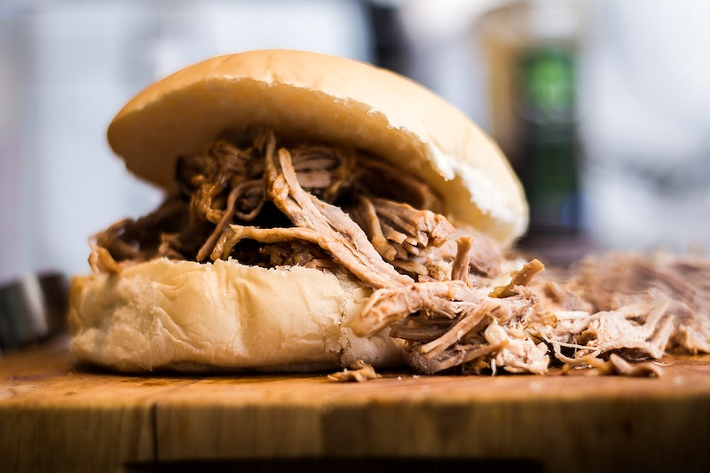

Pulled Pork
Description
Make delicious pulled pork by following this recipe. It will take some preparation and patience but the result is worth the effort.
Serve on a bun accompanied by coleslaw, corn on the cob and potato salad.
Ingredients
- 2,5 kg pork butt
- 2 x BBQ sauce recipe
- 1 x BBQ rub recipe
- 12 buns of your choosing
Preparation
- On the evening before dry the meat with paper towels and remove excess fat. When you leave excess fat, the rub won't be absorbed properly. After removing fat rub the BBQ rub onto the meat.
- Take the meat out of the fridge an hour before starting to cook the meat.
- Preheat the oven to 100 degrees.
- Put the meat in a roasting pan.
- Pour half of the BBQ over the meat, cover the roasting pan with aluminium foil and put it in the oven.
- Cook the meat for 4 hours at 120 degrees. After that, increase the temperature to 150 degrees and leave cook the meat for another 3 hours. Half an hour before the end of the cook time, remove the aluminium foil. This will allow the meat to form a bark.
- The meat is ready to pull when the core temperature has reached +/- 88 degrees. How long this will take depends on the size and other characteristics of the meat. Increasing temperature will decrease the time this will take. However, the slower, the more flavour the meat will develop. Test tenderness by pulling some meat. If the meat can't be easily pulled, leave the meat for another 15 minutes.
- Take the meat out of the oven and leave it to rest for half an hour.
- Pull the meat using two forks.
- Serve the meat on buns.